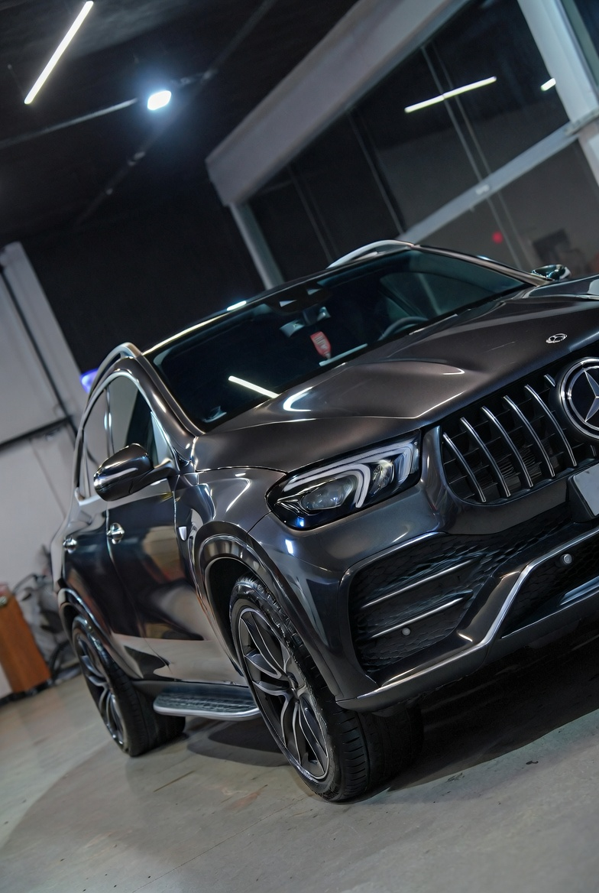
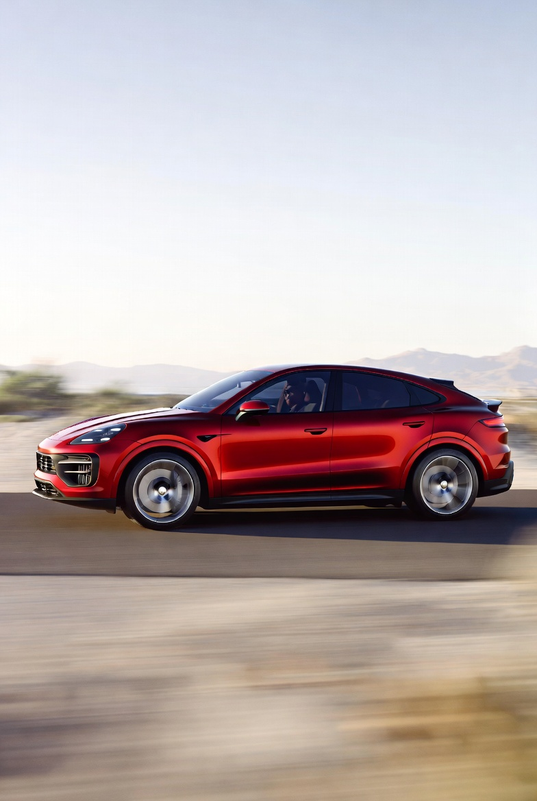
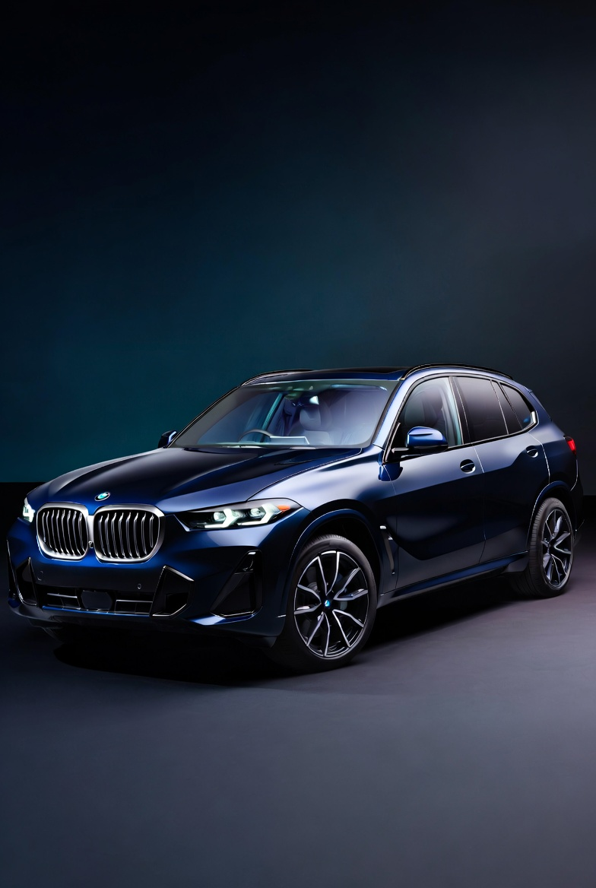
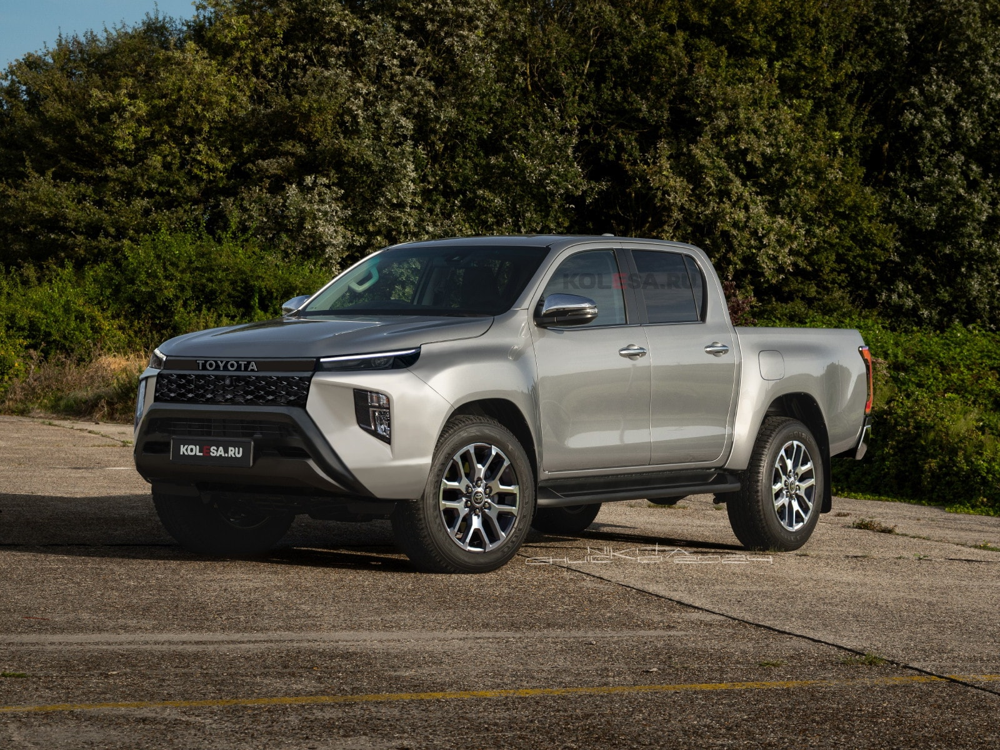

Mercedes-Benz GLE
SUV de lujo mediano que combina elegancia, tecnología avanzada y versatilidad para familias o ejecutivos.
Características principales:
- Motores: Desde 255 hp (2.0L turbo) hasta 510 hp (V8) con mild-hybrid.
- Interior premium con pantalla MBUX grande, iluminación ambiental y gran espacio.
- Tracción 4MATIC, suspensión adaptable y capacidad off-road ligera.
- Ideal para: Confort diario y presencia imponente.

Porsche Cayenne
SUV deportivo de alto rendimiento que ofrece la emoción de un Porsche con practicidad familiar.
Características principales:
- Motores: 348 hp (V6 turbo) hasta más de 650 hp en versiones Turbo GT.
- Aceleración 0-100 km/h en menos de 4 segundos en versiones altas.
- Manejo preciso, tracción integral y suspensión adaptativa.
- Ideal para: Clientes que buscan deportividad y estatus.

BMW X5
SUV premium con carácter deportivo, lujo y tecnología innovadora.
Características principales:
- Interior de alta calidad con iDrive y pantallas curvas.
- Espacio generoso y gran capacidad de remolque.
- Ideal para: Quienes quieren diversión al volante en un SUV.
- Motores potentes (incluyendo híbridos) con excelente dinámica de manejo.

Porsche 911
Ícono deportivo de motor trasero, el coupé más deseado por su diseño atemporal y rendimiento legendario.
Características principales:
- Motores boxer de alto rendimiento (más de 400 hp en base).
- Aceleración brutal y manejo preciso.
- Versiones Carrera, Turbo, GT3, etc.
- Ideal para: Entusiastas de deportivos puros.

Toyota Hilux 2026
La pickup más dura, confiable y legendaria del mercado, lista para el trabajo pesado y la aventura extrema.
Características principales:
- Opciones diésel robustos (2.4L y 2.8L) con excelente torque para remolque y terrenos difíciles.
- Chasis reforzado, suspensión resistente y capacidad todoterreno probada (una de las más confiables del mundo).
- Pantalla táctil moderna, Apple CarPlay/Android Auto, cámara 360°, asistencias de seguridad y confort mejorado.
- Gran espacio de carga, versiones cabina simple, extra y doble.
- Ideal para: Trabajadores, aventureros y quienes necesitan una pickup confiable para todo.
